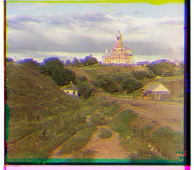
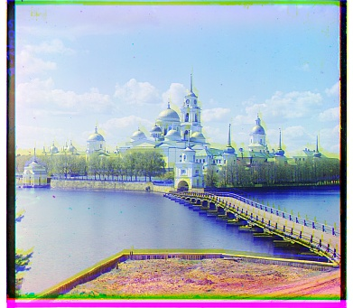
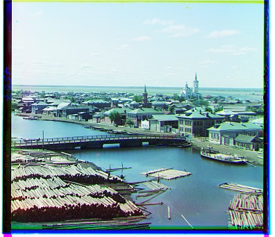

This project took Prokudin-Gorskii glass plate images, where each image contains three channels (blue green red). Using image processing, these three channels were merged together to produce a full color image. The methods used in this project aimed to align the three channels with each other so that they produced a smooth image.
To align the JPG images, I used the method outlined in the spec, using the NCC (Normalized Cross-Correlation) method and exhaustively searching through displacements of -15 to 15. After splitting the image into thirds, the red channel was kept constant to compare blue and green to. The blue and green channels went through the same process, iteratively checking all possible displacements in both the x and y direction, amount to 30x30 = 900 total iterations. Each iteration, a displacement (np.roll) and a crop was applied (to remove some of the white edges so it does not just align to the borders). Then, a NCC was calculated. After all 900 iterations, the max NCC score was saved as the displacement and overlayed onto each other. This method was not 100% perfect, but it resulted in pretty good looking images. Parameters such as displacement and crop amount could be fine-tuned, but it would likely be more cost-effective to implement an auto-crop, white-balance, or other methods mentioned in Bells & Whistles for improvement.



To align the high resolution images, an image pyramid was used. A recursive algorithm started at level 3 and went all the way down to level 0, halving the resolution every level down. For every level, we ran the same algorithm as part 1 (with the exhaustive search through displacements, cropping, and maximizing NCC score). The only parameter we modified in this algorithm was the displacement, which narrowed as the level increased. At level 0, we kept displacement at 15. The output of this was then multiplied by 2 (since the image resolution was halved), and used as a starting point, or offset for the next level. This repeated all the way until level 3 was reached. Level 1 had a displacement of 9, level 2 had a displacement of 5, and level 3 had a displacement of 2. These were pretty random arbitrary numbers I selected, but these values can be fine-tuned for more accuracy (or faster algorithm speed). This way, we managed to achieve a good result with a relatively inexpensive algorithm, with displacements propagating from lower resolutions.
This gallery includes the example images given as well as 4 images from the Prokudin-Gorskii collection